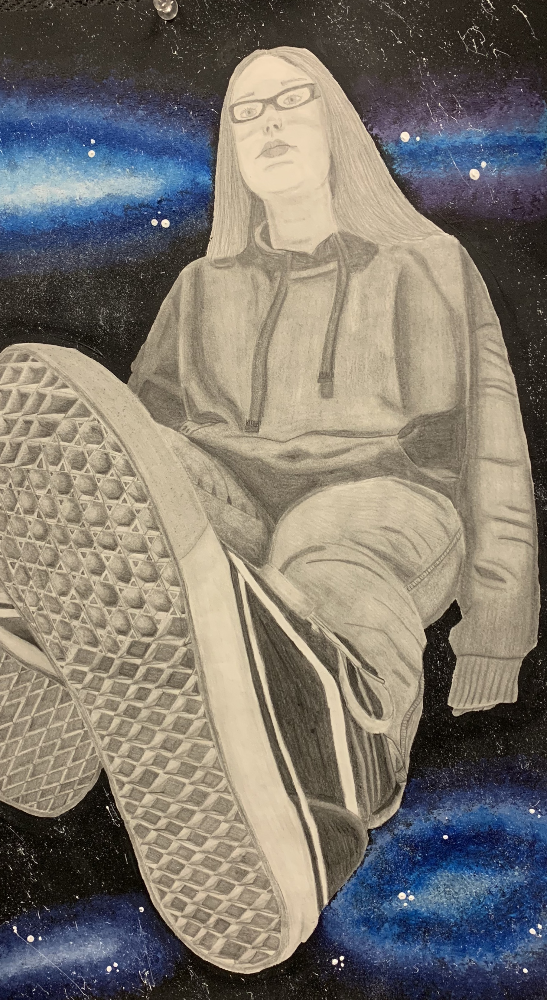
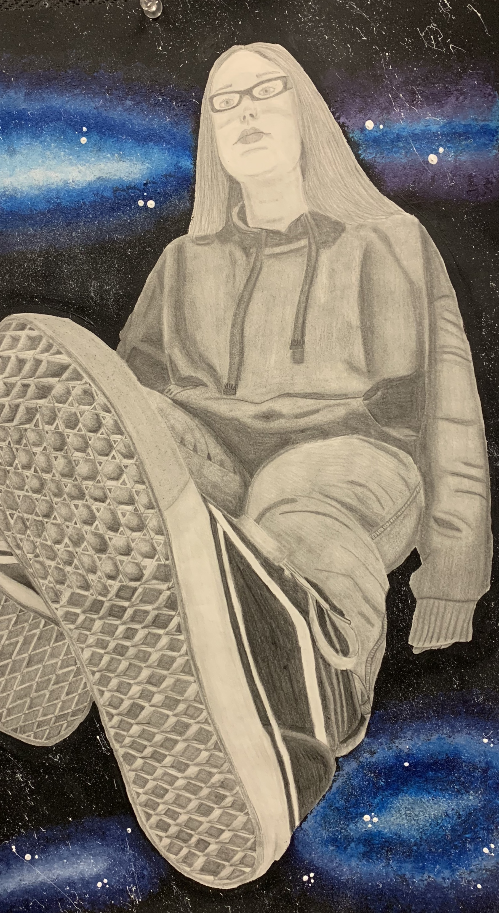

Hello! My name is Melody Mitchell. I am from West Greenwich, Rhode Island and I am a sophomore at the University of Rhode Island.
My major is Undeclared, so I am taking CSC106 to test out Computer Science as a potential major. Fun fact: I have blue hair! I also have
three dogs; Luna, Cee Cee and Maggie. Some of my favorite things to do are draw and paint, as well as go to concerts with friends. I have
included a picture of me at a concert with my sister and friends below, as well as a picture of a self portrait I drew and a picture of my dog, Cee Cee.
 
